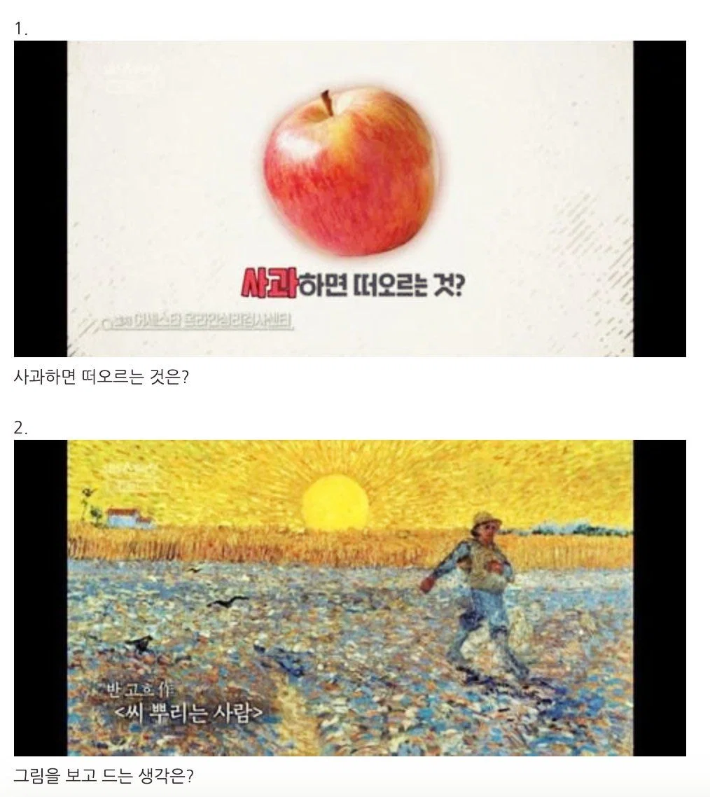
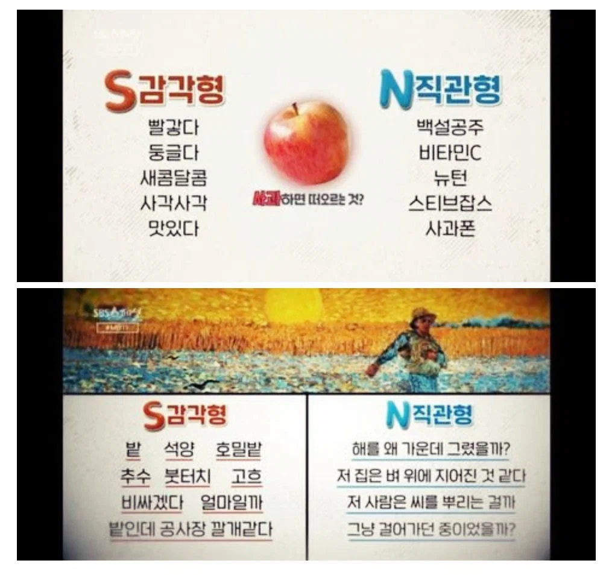

1.백설공주
2. 덥겠다
1. 나무
2. 씨를 뿌리는데 뒤에 있는 벼같은 식물은 뭘까?
맛있겠다 / 힘들겠다
1.사과쨈, 애플폰
2. 고흐흑
S나오네
ESTP
사과 하면 사과만 생각나는데 머냐
1. 주스
2. 다리가 업쒀!!!?!
사과나무
태양이 이쁘다
원숭이 엉덩이는 빨게 빨가면 사과..해서 원숭이 엉덩이 떠올렸는뎅;;
1. 아삭아삭
2. 어우 땡볕이네 존나 하기싫겠다
2번은 뭐로 분류해야되냐
1. 주스 2. 힘들겠다. 나는 뭐임?
1. 사과네
2. 그림이네
'이런 단편적인 테스트로 제삼자가 성향 분류할 수 있을까? 그냥 자가질문하면 나오는건데'
빨개, 맛있겠다
석양 이쁘다
1. 빨갛다, 새콤달콤
2. 해가 뜨는건가 지는건가? 퇴근하는건가, 출근하는건가? 아 방향이 밭 반대방향이니 퇴근하나보다. 그럼 저 해는 지는거고 노을이겠네.
사과네/ 교수님의 C뿌리기!!
1.빨갛다 둥글다 새콤달콤
2.저 집안쪽이 궁금하다
사과는 뭐 사과지
그림은 그림이고
아무생각안드는데
ㄹㅇ
걍 갑자기 동요가 떠올랏음
1. 빨갛네
2. 태양이 있네
맛있다
덥겟다
1백설공주
2 무슨씨 뿌리는거지? 집에 가는것 같네
농부
나 문항체크하면 N 90% S 10%인데 사과 보고 깨물어먹으면 달고 맛있겠다 히히 만 생각함
1. 바나나
2. 노랗다
사과 하면 그냥 사과가 사과지 뭔 생각?
이라고 했으면 뭐냐
비싸겠닼ㅋㅋㅋㅋ